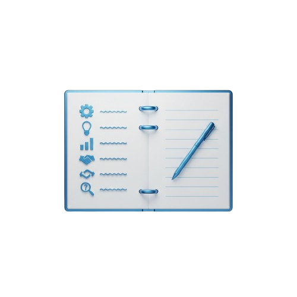

Alessandro Fuentes
Étudiant BTS SIO, Option SISR
Étudiant en informatique au Lycée René Cassin, j'ai réalisé mes deux stages au sein du SIS 67 - Service d'Incendie et de Secours du Bas-Rhin - où j'ai administré et sécurisé des infrastructures critiques au service des sapeurs-pompiers du Bas-Rhin.

Qu'est-ce que le BTS SIO ?
Le BTS Services Informatiques aux Organisations est un diplôme de niveau Bac+2 reconnu par l'État. Il forme des techniciens capables de gérer et d'administrer les systèmes d'information dans tous types d'organisations.
Formation complète
2 ans de formation alliant cours théoriques, travaux pratiques et stages en entreprise pour une montée en compétences progressive.

Compétences techniques
Réseaux, systèmes, développement, cybersécurité et gestion de projet.
Expérience professionnelle
Des mises en situation réelles en entreprise pour appliquer les compétences acquises et construire son identité professionnelle.